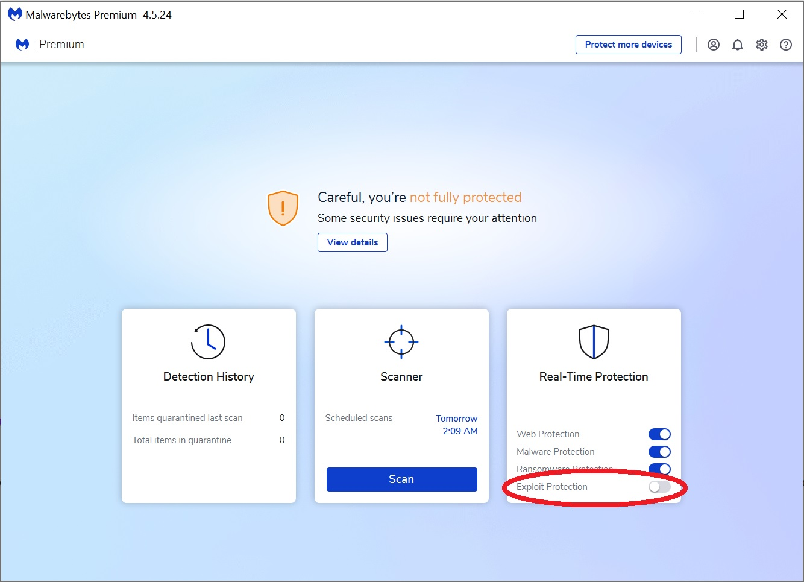

XLKitLearn and Malwarebytes
To function, XLKitLearn has to run Python code - this can appear like illicit activity to software like Malwarebytes.
To ensure Malwarebytes will allow XLKitLearn to run, you need to carry out the following steps
- Launch the Malwarebytes administrative console.
- Turn off "Exploit Protection":
